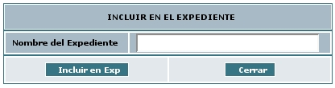

Incluir y Excluir un radicado en un Radicado con Expedientes
Esta funcionalidad permite al usuario incluir un radicado en un expediente existente. Estos expedientes virtuales se van conformando a medida que el usuario o usuarios incluyen radicados en determinado nombre de expediente, logrando en una sola ventana mostrar todos los documentos involucrados en el mismo proceso y los cuales se encuentran físicamente archivados.
Los expedientes se conforman teniendo en cuenta el año y la dependencia. Cada expediente refleja como se encuentran organizados físicamente los archivos de cada una de las áreas productoras.
Para la
conformación de los expedientes virtuales se debe:
1. Seleccionar la carpeta donde se encuentra el radicado que ya posee un Expediente el cual se quiere incluir en un nuevo expediente:
2. Ingresar al radicado por la fecha de radicación:

3. Dar click en la pestaña Expedientes:

4. El sistema se ubica en la vista de "Expedientes" la cual está compuesta por:

a. Documento Asociado: Indica el numero de radicado con el que se va a trabajar.
b. Nombre de Expediente: Muestra el numero del expediente donde se encuentra actualmente el radicado.
c. Historia del Expediente: Muestra todas las operaciones realizadas al expediente donde se encuentra el radicado.
d. Ver Borrados: Muestra los documentos que han sido borrados del expediente.
e. Enlace Crear: Nos permite crear un nuevo expediente para el mismo radicado.
f. Enlace Excluir de: Nos permite excluir un radicado de un expediente determinado.
g. Enlace Incluir en: Nos permite incluir este radicado en un expediente distinto
Incluir un Radicado en un expediente existente:
Al dar clic en el enlace INCLUIR EN aparecerá el siguiente cuadro el cual debe ser llenado con el numero del expediente en el cual se desea incluir el radicado

Para incluir un radicado en un expediente se debe tener en cuenta que todos los expedientes creados tienen la siguiente estructura:
|
2006 |
905 |
1401 |
00012 |
E |
|
Año |
Dependencia |
Serie SubSerie |
Número de Expediente |
Indica que es un Expediente |
Nota: Un usuario puede incluir un radicado a cualquier expediente si importar que el usuario no pertenezca a la dependencia que creo el Expediente.
a.
Diligenciar en la caja de texto el número de expediente que
desea incluir.
b. Dar click en el botón "Incluir en
Exp"
c. El sistema solicita la confirmación de la
Inclusión o Asociación del radicado al expediente.

d. Dar
click en el botón Confirmar
e. El sistema graba los datos
del radicado en el cual se encuentra ubicado y aparece esta
información en la vista del expediente, indicando el número
del expediente a donde se incluyó (el numero indicado en el
punto a, más una letra E, que indica Expediente) y los
documentos anexos que tiene dicho radicado y que pertenecen a este
expediente.
Para todos los radicados que son grabados en un expediente, automáticamente se envia una notificación a las personas de Archivo para que realicen el procedimiento de Archivado físico del documento a cada expediente.
El expediente virtual debe reflejar una fiel copia del expediente físico, por lo anterior, recuerde entregar todos los documentos físicos que cree o que incluya en un determinado expediente, al grupo de archivo correspondiente.
Excluir un radicado de un expediente:
Al dar clic en el enlace EXCLUIR DE aparecerá la siguiente ventana, donde se debe marcar de que expediente se desea excluir el radicado.

Paso seguido se procede a dar clic en el botón EXCLUIR y aparecerá el siguiente complemento:

Al dar clic en el botón CONFIRMAR aparecerá una ventana con los datos de en que expedientes se encuentra incluido el radicado.
Para todos los radicados que son grabados en un expediente, automáticamente se envia una notificación a las personas de Archivo para que realicen el procedimiento de Archivado físico del documento a cada expediente.
El expediente virtual debe reflejar una fiel copia del expediente físico, por lo anterior, recuerde entregar todos los documentos físicos que se requieran al grupo de archivo correspondiente.